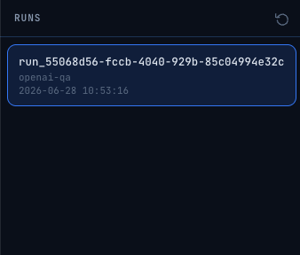

Web UI
The flow-forge-ai-ui package is a lightweight FastAPI application for browsing and replaying workflow runs recorded by the core runtime.
Requirements
flow-forge-aiinstalled and configured with[runtime].enable = true- The runtime listener must be reachable at the configured
listener_host:listener_port
Installation
pip install flow-forge-ai[ui]
Or install the UI package directly:
pip install flow-forge-ai-ui
Starting the UI
flow-forge-ai-ui
By default the server listens on http://127.0.0.1:8080.
Options
flow-forge-ai-ui --host 0.0.0.0 --port 9090
| Flag | Default | Description |
|---|---|---|
-H / --host |
127.0.0.1 |
Bind address |
-p / --port |
8080 |
Port |
Configuration
The UI reads config.toml from the current working directory (the same file used by the core runtime). It uses the [runtime] section to locate the listener:
[runtime]
enable = true
listener_host = "127.0.0.1"
listener_port = 7070
Make sure the runtime listener is started before opening the UI. The core package starts the listener automatically when a workflow run begins.
Usage
- Start your workflow in one terminal (the core runtime listener starts automatically):
bash
cd core/examples/02_ollama_workflow_decorator
python example.py
- In another terminal, start the UI from the directory containing
config.toml:
bash
flow-forge-ai-ui
- Open
http://127.0.0.1:8080in your browser.
Screenshots
Run list

Run detail / steps

Replay
API Routes
The UI is a thin FastAPI app that proxies requests to the core runtime listener.
| Method | Path | Description |
|---|---|---|
GET |
/ |
Main UI page (HTML) |
GET |
/api/runs |
Proxy: list runs |
GET |
/api/steps |
Proxy: list steps for a run |
POST |
/api/runs/{run_id}/replay |
Proxy: start replay |
GET |
/api/runs/{run_id}/replay |
Proxy: get replay status |
DELETE |
/api/runs/{run_id}/replay |
Proxy: stop replay |
Package Layout
ui/src/flow_forge_ai_ui/
├── app.py # FastAPI app factory and CLI entry point
├── routes.py # Route handlers and runtime proxy client
├── templates/ # Jinja2 HTML templates
└── static/ # JS and static assets